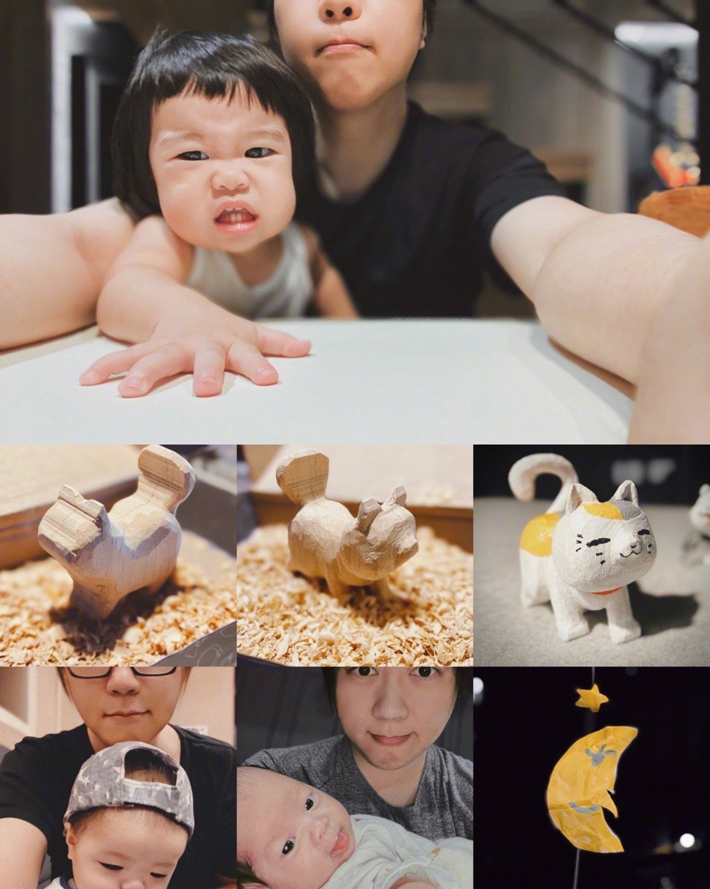
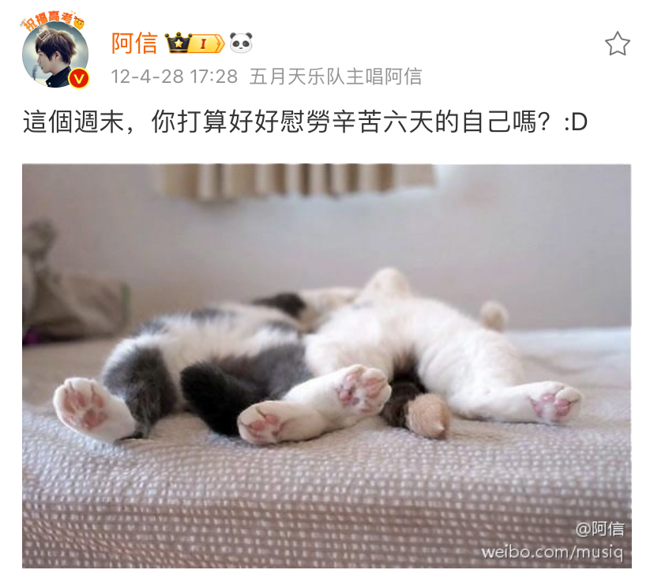
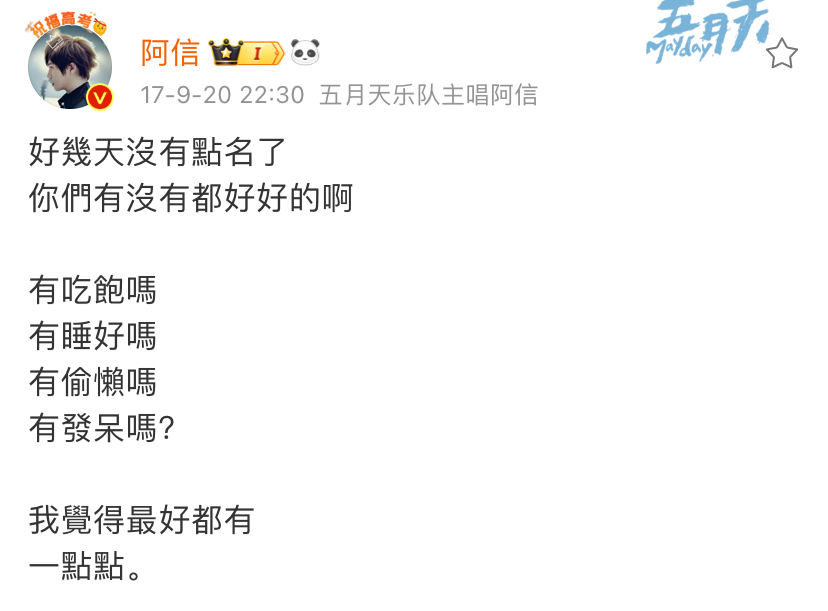
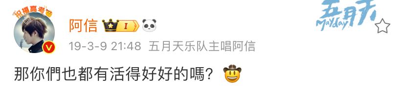
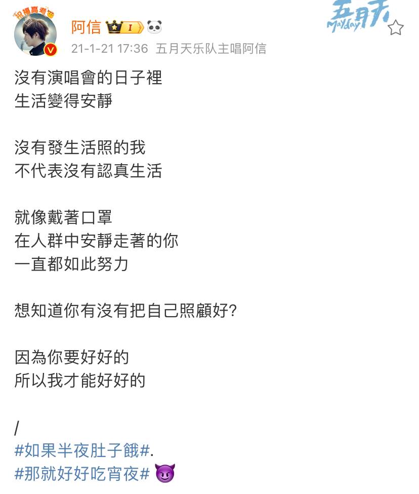
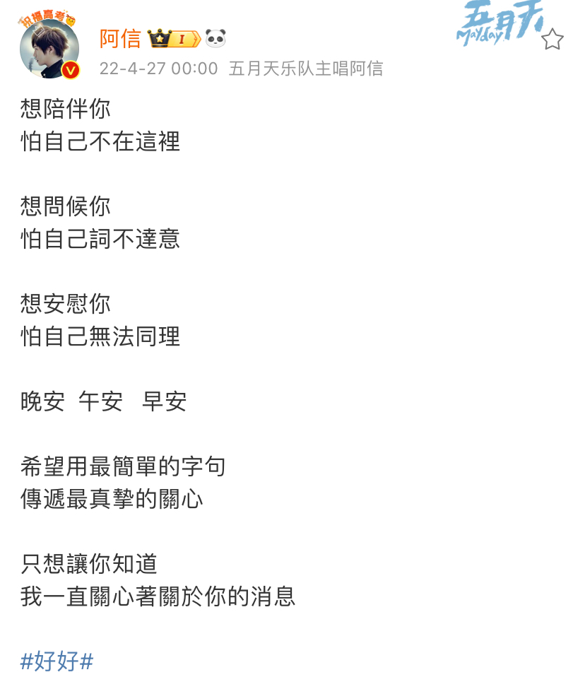

「我們好好，好到瘋掉，像找回失散多年雙胞。」
對，你懂的。
有些人，總是留給你一份漫長的想念。
還以為能馴服那份思念，
如同家貓一般，安靜地陪伴在身旁。
「生命再長，不過煙火落下了眼角。」
「世界再大，不過你我凝視的微笑。」
當時的我們，
忘了要長大 忘了要煩惱
忘了時間有腳。
後來才後悔，
不知道未來 不知道煩惱
不知那些日子 會是那麼少...
「時間的電影，結局才知道，原來大人已沒有童謠。」
所謂故事，
都是已逝光陰裡的殘篇。
發現的那天，我們都哭了。
「我們都要把自己照顧好，好到遺憾無法打擾。」
要按時吃飯阿，要多穿衣服阿，要早點睡覺阿 ......
以後（以前，總是嫌很煩）
再也不能聽到誰這樣絮絮叨叨地叮嚀著對方了。
從這一刻，
你把我，野放回現實世界了。
我把你，託付給未知未來了。
「最安靜的時刻，回憶總是最喧囂。」
「最喧囂的狂歡，寂寞包圍著孤島。」
我們約好，都要努力。
好好的生活，
好好的變老，
好好假裝我已經把你 忘掉 ......
忘掉前（也許吧）
我想把你寫成一首歌，然後
養一隻貓。
-
#五月天好好# #五月天自传#
--------------------------------------------------
當時的我們，
在大人和小孩的轉角，蓋了一座城堡，
友情，愛情，都不足以形容這樣的 我和你。
後來的我們，
終究沒有逃過光陰的魔法，城堡裡，人去樓空。
只是，偶爾側耳傾聽，歌聲裡依然光芒斑斕，
一如當時。
這首歌，給你。
🎥好好
[ 好好 ]
特別感謝： @徐若瑄VIVIAN @林志玲 @紀培慧
~歌詞~
-
#五月天好好# #五月天自传#
--------------------------------------------------
想說，明年3月29日，
就是五月天的20歲生日了。（！）
人生，剛好一半的時光，我都身為 "五月天" 的成員之一，我想，這也是你們之所以認識我的主要原因。
「所有知道我的名字的人啊，你們好不好？」
有時候，想這樣問問你們。（打開窗戶大喊）因為，這一路，你們也都似近若遠地，陪著我一起前進著。
雖然沒有辦法知道你們每個人的名字跟樣子，但能感受到你們有著石頭的溫柔，冠佑的踏實，怪獸的熱血，瑪莎的賤嘴(？)。
能夠寫歌給這樣的你聽，真的很好。（好到瘋掉）
你徹夜苦讀，你上了大學，你談了戀愛，你又失戀了，你結婚了，你有了小孩，你跟朋友到K房唱到天亮，你在逆風中發亮著，你戴著耳機思考著人生，你始終沒有走遠。
能跟這樣的你，一起寫下這個時代的傳記，真的很好。
我的自傳，有些篇章挺精采的。但我想說，因為你們，那些段落才能折射著光亮。如果可以，我想陪你寫下更多未來，我想要你們的傳記，比我的更精采。
我們都要把自己照顧好，好到遺憾無法打擾。
有你們的生日，快樂是當然，也希望把快樂與你分享。
時間的電影，還流洩著配樂，
我願其中一首，名字叫五月天。
「然後呢？一起走吧」
-
ps.謝謝你們的 #五月天阿信1206生日快乐#
--------------------------------------------------
不要祝我生日
阿信 2021-12-06 21:28
不要祝我生日快樂，
因為我好像什麼都擁有了，
連寶寶都可以借很多隻來抱。
不要祝我生日快樂，
因為我好像什麼都不缺了，
連貓咪也可以自己刻，陪伴著我。
不要祝我生日快樂，
我更希望我大難歸來的老媽
早日康復，跟你們一起飛到全世界看五月天演唱會。
不要祝我生日快樂，
我更希望師妹師弟玩團玩音樂
的小朋友們 能夠無憂無慮的實現理想。
不要祝我生日快樂，
我更希望辛苦了兩年的醫療夥伴，
能夠早日盼到疫情平息，
百工百業回歸常態。
不要祝我生日快樂，
因為很少發生活照的我，
日子其實過得很平靜豐富了。
不要祝我生日快樂，
我只想要身邊的人都健康平安，
不在我身邊的你，也要
幸福
圓滿
一切好好
謝謝你們 一直都是。
#如果真的要祝福#
#我還是會通通收下的#
#阿信的成长纪念#
阿信超话
好好 （詞:阿信 曲:阿信/冠佑）
想把你寫成一首歌 想養一隻貓
想要回到每個場景 撥慢每隻錶
我們在小孩和大人的轉角 蓋一座城堡
我們好好 好到瘋掉 像找回失散多年雙胞
生命再長不過 煙火 落下了眼角
世界再大不過 你我 凝視的微笑
在所有流逝風景與人群中 你對我最好
一切好好 是否太好 沒有人知道
你和我背著空空的書包
逃出名為日常的監牢
忘了要長大
忘了要變老
忘了時間有腳
最安靜的時刻 回憶 總是最喧囂
最喧囂的狂歡 寂寞 包圍著孤島
還以為馴服想念能陪伴我 像一隻家貓
它就窩在 沙發一角 卻不肯睡著
你和我曾有滿滿的羽毛
跳著名為青春的舞蹈
不知道未來
不知道煩惱
不知那些日子 會是那麼少
時間的電影 結局才知道
原來大人已沒有童謠
最後的叮嚀
最後的擁抱
我們紅著眼笑
「我們都要把自己照顧好」*
好到遺憾無法打擾
好好的生活
好好的變老
好好假裝我 已經把你忘掉
*阿信重點標記的一句歌詞，來自他對愛的人最深的關心
兩隻貓貓
要把自己照顧好




--未完待續--